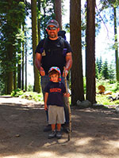

Camping With the Giants
We tent camped this year with the largest trees in the world at the Sequoia National Park. This is our second year and we went on completely different hikes and saw many different views than before.
We settled into our campsite and soon had visitors :)
These shots of the boys happened while they were still clean. Clean faces didn't survive more than a few minutes after this.
For our first trip out, we went to see the famous Crescent Meadow
We moved campsites the next day and secured our favorite spot by the riverbed. Some people who were leaving gave the boys a blow-up raft to play with.

We took a long 6 1/2 mile hike up to the watchtower with our friends who were camping on the spot next to us. Laurie and I took turns carrying Liam in the hiking pack.